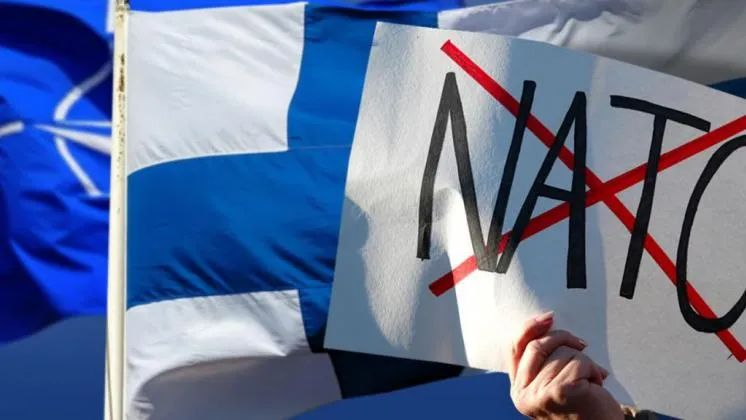
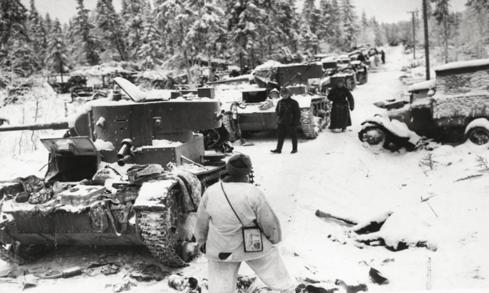
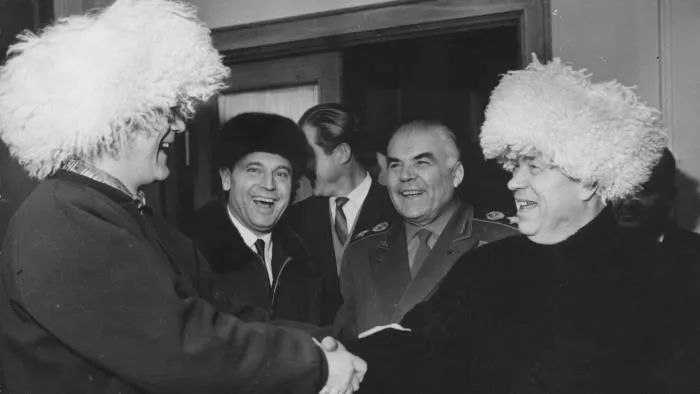
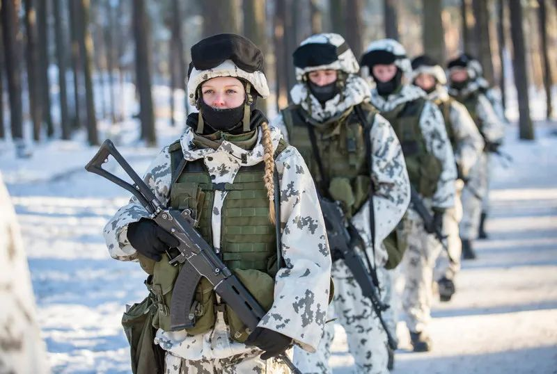
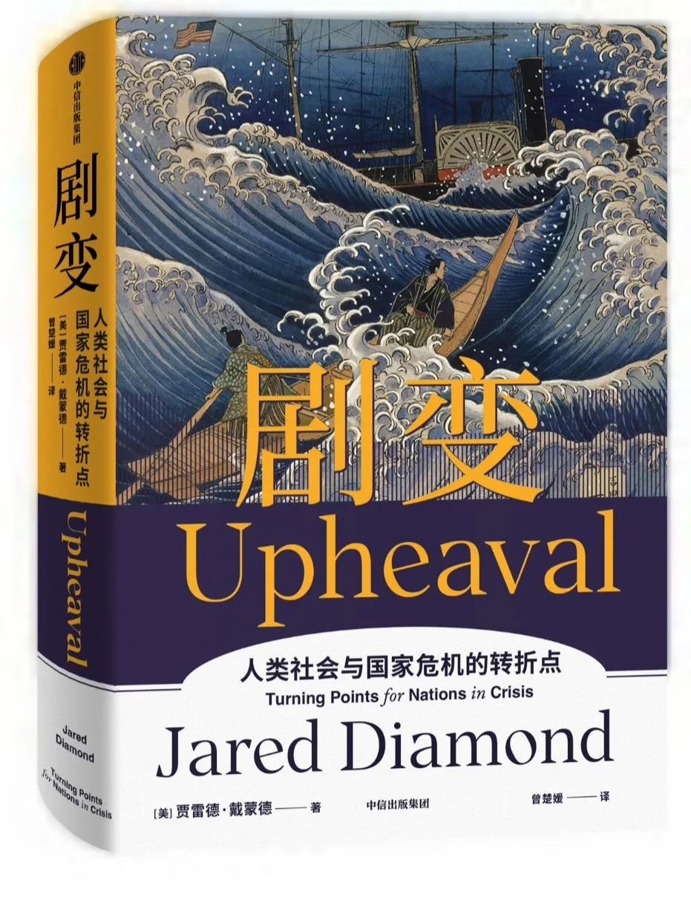

收录于合集

导 读
在当下对乌克兰危机解决之道的讨论中，中立化成为一个热议选项。著名国际关系学者与外交家基辛格曾在2014年提出，要想解决乌克兰危机，乌克兰领导人应在坚持独立性和民选政府的同时，学习芬兰的中立战略，避免俄罗斯的敌意。 芬兰道路确实与绝大多数欧洲国家的选择截然不同，在冷战中，芬兰在和西方加强联系的同时与苏联保持了良好关系。然而，“芬兰道路”并非从天而降，它始于一场不亚于当前俄乌冲突的地缘敌对和残酷战争。 只有搞明白 芬兰当初如何度过危机， 才能判断乌克兰“中立化”是否现实。
二战期间，地理与历史因素导致芬兰和苏联互不信任，两国先后爆发冬季战争（1939-1940）和继续战争（1941-1944），在双方都付出极大伤亡代价后，芬兰签订条件苛刻的停战协议。随后，芬兰出台了全新的战后政策，1946-1981年巴锡基维和吉科宁两位总统执政期间，致力于建立与苏联之间的互信关系，在此基础上推进与西方的合作，并成为苏联和西方之间的交流门户。芬兰的谨慎行事换来了国家的独立自主和经济的增长。
作者进一步分析了影响芬兰危机解决的有利与不利因素。 有利因素包括：首先，芬兰清醒地反省了战前的外交政策，认清不可能与苏联长期对抗的现实，并改变了以往忽视苏联的政策。 其次，芬兰展现出强烈国家认同和捍卫国家独立的决心。最后，芬兰能够坚持不懈探寻可能的危机解决方案，并在特定情况展现出灵活性。 而不利因素则有：一开始芬兰国民缺乏危机共识，在危机过程中缺乏盟友援助、缺乏可供借鉴的经验、地缘政治的约束。
但是，芬兰的中立选择其实顶着巨大压力， 不乏有人以贬义的“芬兰化” （Finlandization） 一词来讽刺芬兰的妥协，把中立视为可悲、屈辱和主权让步。 这些人无须面对芬兰的地缘政治困境，他们反对“芬兰化”，本质上是恐惧屈服于苏联。如今乌克兰危机在诸多方面都呈现出与芬兰危机类似的特征，芬兰的案例强烈表明，战争和敌对有可能转变为和解与中立，但需具备一定条件。欧亚系统科学研究会特编发本文，供读者思考。文章出自《剧变：人类社会与国家危机的转折点》（中信出版社2022年），仅代表作者本人观点。

▲ 芬兰至今为止仍拒绝加入北约
芬兰属于斯堪的纳维亚（北欧）国家，仅有600万人口，西毗瑞典，东邻俄罗斯。在一战爆发前的一个世纪内，芬兰还未成为独立国家，仅仅是沙皇俄国的一个自治大公国。那时候的芬兰一贫如洗，在欧洲内部不太受到关注，在欧洲以外更是寂寂无闻。二战刚开始时，芬兰虽已独立，但尚未摆脱贫穷，依然把农业和林业生产作为自己的经济重心。今天，芬兰因科技和工业举世闻名，并且成为世界上最富裕的国家之一，其国内人均收入水平可以和德国及瑞典相提并论。这个国家的安全建立在一个明显的矛盾局面上： 作为一个自由主义社会民主政体，芬兰在长达数十年间与奉行共产主义的苏联以及如今的俄罗斯保持着良好的互信关系。 芬兰国家特征的这种矛盾组合构成了一个选择性变革的突出案例。
01
** 1945年之前的芬兰 ：战争时代** ****
数千年前，还是史前时期的时候，第一批说芬兰语的人开始在这片大陆定居下来。芬兰的历史最早可追溯至大约1100年，即第一次出现关于芬兰的详细书面记载时，自此之后，芬兰一直是瑞典和俄国的争夺对象。大部分时候芬兰都处于瑞典的控制之下，直到1809年，俄国吞并芬兰。在19世纪很长一段时间内，俄国沙皇允许芬兰拥有较大的自治权，芬兰可以有自己的议会、行政权和货币，而且俄国没有强迫芬兰人使用俄语。但是，在1894年尼古拉斯二世即位成为新沙皇后，他任命可恶的尼古拉·博布里科夫（在1904年被一名芬兰人刺杀）为芬兰大公国总督，俄国开始对芬兰实施高压统治。 于是，在1917年年未，一战即将结束，俄国十月革命爆发后，芬兰宣布独立。
芬兰的独立引起了惨烈的芬兰内战。一方是被称为“白军”的保守政府派，由在德国受训的芬兰部队组成，并受到在芬兰境内的德军协助。他们的对手是代表芬兰共产主义势力的“红军”，以及仍驻扎于芬兰境内的俄国部队。1918年5月，出于巩固胜绩的考虑，白军射杀了近8000名红军，还有2万名红军被困在集中营里，在饥饿和病痛之中死去。要是以一国平均每个月被杀害的国民人数占国民总人口的比例来算，芬兰内战是1994年卢旺达种族大屠杀发生之前，世界上死亡人数最多的一场内战。这场内战很可能会给这个年轻的国家埋下分裂的祸根，但幸好芬兰国内势力迅速达成和解，幸存的左翼红军重新获得了完整的政治权利，在1926年，一名左翼人士还成了芬兰的总理。然而，有关内战的痛苦记忆使芬兰对俄国心存恐惧，因此影响了之后芬兰对苏联的态度。
20世纪二三十年代，芬兰始终对由俄国发展而成的苏联感到畏惧。两国在意识形态上不同：芬兰是资本主义国家，苏联则是共产主义国家。芬兰人难以忘记最后一代沙皇治下的俄国对芬兰的压迫，他们害怕苏联会想要重新夺回芬兰。他们在担忧中目睹斯大林在20世纪30年代掀起的阵阵腥风血雨。和芬兰最直接相关的事情是，苏联开始在其与芬兰国界线以东、人烟稀少的苏联国土上建设机场和铁路。这些铁路中有一条直达芬兰，终点是没有设置边界的森林中央，除了为入侵芬兰做铺垫，你想不到它还能有什么别的用处。
当德国在希特勒的统治之下重整武装，并且与苏联越来越呈现出相互对抗的姿态时，芬兰试图维持一种中立的外交政策，忽略来自苏联的威胁，期盼这种威胁不会引发任何实际行动。
结合地理和历史因素，芬兰有充分的理由对苏联心存忧虑，同样地，苏联也出于同样的理由对芬兰持怀疑态度。 二战以前，两国的边境在列宁格勒以北仅30英里的地方。早在1918年，德国军队就已进驻芬兰对抗共产主义势力；英法两军更是在19世纪50年代的克里米亚战争中进入芬兰湾，对圣彼得堡进行封锁或进攻；18世纪初，法国曾在赫尔辛基港建造了大型要塞，以准备进攻圣彼得堡。20世纪30年代后期，斯大林有充分的理由担心德国会在希特勒的领导下扩张版图。希特勒在其自传《我的奋斗》中表达了德国东扩、吞并苏联的愿景。斯大林目睹希特勒统治下的德国在1938年3月吞并了奥地利，在1939年3月接管了捷克斯洛伐克，并开始对波兰造成威胁。于是斯大林向波兰提出共同防卫计划，应对来自德国与日俱增的威胁，但法国、英国和波兰都拒绝了这个提议。
1939年8月，希特勒和斯大林突然停止敌对，并签署了《苏德互不侵犯条约》，又被称为《莫洛托夫–里宾特洛甫条约》。芬兰人怀疑，这份条约中包含了分割势力范围的秘密协议（后来被证明确实如此），不出所料，德国承认芬兰属于苏联的势力范围。该条约签署后，德国随即闪电入侵波兰，几周之后，苏联入侵了波兰东部。可以理解，斯大林想要将苏联的国界尽可能地向西推移，以应对德国不断增强的威胁。
1939年10月，因仍然担心德国最终会发动攻击，苏联迫切地想把自己西部的边界尽可能向西推进。《苏德互不侵犯条约》既已暂时保住安全，苏联对邻近的波罗的海四国——立陶宛、拉脱维亚、爱沙尼亚，以及芬兰发出最后通牒。对于前三个国家，苏联提出的要求是在其境内设立苏联军事基地，并且苏军有自由出入这些基地的权利。允许苏军驻扎显然会使三国失去自卫能力，但弱小的它们认为自己挣扎无望，只好接受苏联的要求。到1940年6月，三国终被苏联吞并。苏联在1939年10月初对芬兰提出了两项要求。 第一项要求是，苏芬两国原本在卡累利阿地峡的边界必须要撤到离列宁格勒更远的地方 ，这样列宁格勒就不会被他国（例如，1918年在芬兰驻军的德国）任意轰炸或据为己有。虽然芬兰本身对苏联不构成威胁，不会袭击苏联，但从现实角度考虑，苏联担心某些主要的欧洲力量通过芬兰打击自己。 第二项要求是，允许苏联在芬兰首都赫尔辛基的南部海岸建立海军基地，并要求芬兰割让位于芬兰湾的一些小岛。
苏芬两国之间的秘密谈判从1939年10月持续到11月。芬兰方面同意做一些让步，但远远没有达到苏联的要求，尽管曼纳林将军强烈敦促芬兰政府做出更大让步，因为他深知芬兰军队的弱势，并且（作为前沙俄军队中将）他很清楚苏联方面提出这些要求出于地理原因。可是，芬兰政府内部各方势力（包括左翼和右翼，即内战中的红军和白军）一致拒绝做出进一步妥协。
芬兰人同仇敌忾、拒绝妥协的第一个原因是，他们害怕斯大林的真实目的是要侵占整个芬兰。芬兰人很担心这次要是满足了苏联的要求，将来会没法拒绝苏联更多的要求。 如果芬兰放弃了卡累利阿地峡的陆地防线，苏联经由陆路大举入侵芬兰将会变得轻而易举。如果允许苏联在赫尔辛基附近建立海军基地，那么苏联将能够同时从陆路和海路对芬兰首都进行轰炸。
芬兰人拒绝妥协的第二个原因来自他们对斯大林的误判：芬兰人认为斯大林只是虚张声势，他实际想要的并没有声称的那么多。同样地，斯大林也出现了误判，他觉得芬兰人也不过是在虚张声势。 斯大林没有想到的是，一个区区小国竟如此疯狂，欲以蚍蜉之躯撼动人口比自己多出近50倍的大国。苏联的作战计划显示，苏军预备在两周内拿下赫尔辛基。 芬兰人拒绝妥协的第三个原因在于，他们误以为世交邦国会在芬兰需要的时候提供防卫上的帮助。 除此之外，芬兰部分领导者推测，如果苏联入侵芬兰，芬兰的军队至少能撑半年，尽管曼纳林将军警告他们这绝不可能。
1939年11月30日，苏联对芬兰发动进攻，宣称芬兰的炮弹在苏联领土着陆，并炸死了数名苏联士兵。（赫鲁晓夫后来承认，这些炮弹实际上是在苏联内部从苏联的武器中发射出的，是一名想挑起战争的苏联将军下达的命令。）随之而来的战争被称为冬季战争。苏联军队在两国边界沿线发动攻击，赫尔辛基等芬兰城市遭到苏联飞机的轰炸。在轰炸第一晚，芬兰的平民伤亡人数便达到了其在二战期间平民伤亡总数的10%。

▲ 冬季战争中芬兰缴获的苏联坦克。图源：互联网
在冬季战争和继续战争这两场战争中，芬兰在与苏联及德国对抗时总共损失了10万人。这一人数占当时芬兰总人口的比例，倘若放在今日的美国，相当于有900万人死于同一场战争。 另外，战争还导致9.4万芬兰人或伤或残，3万芬兰女性失去丈夫，5.5万芬兰儿童成了孤儿，还有61.5万芬兰人无家可归。
停战条约要求芬兰“联合同盟国力量，逮捕被指控为战犯的人员”。同盟国所界定的“芬兰战犯”是：苏芬战争期间芬兰政府的领导者。如果芬兰不起诉自己国家的领导者，那么苏联会亲自动手，并以严刑处之，很可能会将他们判处死刑。
停战条约中，苏联还对芬兰提出赔款要求：芬兰必须在6年内向苏联支付高达3亿美元的巨额赔款。虽说后来苏联把赔款支付年限延至8年，并把金额降到2.26亿美元，但对当时规模极小并且尚未工业化的芬兰经济来说仍旧是一个沉重的负担。然而，矛盾的是，赔款的压力刺激了芬兰经济的变革，促使芬兰发展包括造船业和出口加工业在内的重工业。（这笔赔款从而印证了中文里“危机”一词的含义，其中“危”表示“危险”，而“机”意味着“机遇”。）这场工业化革命带动了战后芬兰经济的增长，芬兰也因而从一个贫困的农业国发展成为现代化工业国（再到如今的高科技产业国）。
除赔款外，芬兰还须同意与苏联开展更多的贸易往来，与苏联的贸易额要达到芬兰贸易总额的20%。芬兰从苏联进口物资，尤其是石油。事实证明，这对芬兰大有裨益，因为芬兰无须像其他的西方国家那样，高度依赖中东石油。但是，根据贸易协定的内容，芬兰还必须进口劣质的苏联商品，比如机车、核电厂和汽车，尽管这些物品如果从西方国家购买会更物美价廉。
02
** 1945年之后的芬兰：中立时代** ****
芬兰人把1945—1948年称为“危险的年代”。 现在回过头来看，我们知道芬兰最终熬出了头，可在那些年间，芬兰的前景并不乐观。苏联要求的赔款对仍以农业生产为主、尚未开展工业化改革的芬兰经济来说负担沉重。在这个危险的年代，芬兰出台了全新的战后政策。 这项政策后来被称作“巴锡基维–吉科宁路线”，是因芬兰的两位总统而得名的，他们分别是：尤霍·巴锡基维，执政时间为1946—1956年；乌尔霍·吉科宁，执政时间为1956—1981年。 这两位总统制定并且不遗余力地实施这一路线长达35年之久。
巴锡基维–吉科宁路线扭转了芬兰在20世纪30年代实施的忽视苏联的灾难性政策。巴锡基维和吉科宁从这些错误中吸取了教训。 对他们而言，不可忽视的痛苦现实是：芬兰就是一个弱小的国家；它不能期待从西方盟友那里得到任何帮助；它必须理解苏联的想法，并且时时放在心上；它必须与苏联各级政府官员保持密切对话；它必须向苏联证明自己可以信守承诺、履行协议，从而获得苏联的信任。
维持苏联的信任不是一件容易的事，芬兰必须竭尽全力。巴锡基维和吉科宁均对苏联和苏联人民较为了解。巴锡基维分别在1939年10月、1940年3月和1944年9月代表芬兰与苏联展开和谈，他还曾担任芬兰驻莫斯科大使一职。 巴锡基维认为，斯大林在处理与芬兰关系时的主要动机无关意识形态，而是关乎战略和地缘政治因素， 具体指的是：苏联重视的是保卫其第二大城市列宁格勒（即现在的圣彼得堡），防止发生如过去那般由芬兰或经过芬兰湾发动攻击的军事事件。如果苏联觉得自己的前线并未受到威胁，那么芬兰也会很安全。但是，只要苏联觉得不安全，芬兰也没有办法安全。说远一些，世界上任何地方发生冲突都有可能让苏联感到不安并因此对芬兰提出要求，所以说，芬兰必须积极地维护世界和平。巴锡基维和后来的吉科宁成功地与斯大林，以及后来的赫鲁晓夫、勃列日涅夫建立了深厚的互信关系。

▲ 芬兰前总统乌尔霍·吉科宁（左）与苏联领导人尼基塔·赫鲁晓夫。图源：getty image
吉科宁总统在他的自传中阐述了巴锡基维和他自己的政策：
芬兰外交政策的基本任务是在本国的生存安全和地缘政治环境的主导利益之间做出协调……（芬兰所奉行的是）预防性外交政策，在危险降临之前就对其有所觉察，并采取措施规避这些危险……尤其对小国来说，我们从不妄想自己的立场能改变大局，对我们而言，至关重要的是能够及时形成的认知，了解未来军事和政治发展会受哪些因素影响……一个国家应当自力更生。战争年代的我们在这一方面吸取了惨痛的教训……经验还告诉我们，一个小国丝毫没有把外交政策方案和情感混为一谈的余地，无论是正面还是负面的情感。一项切合实际的外交政策应当基于对国际政治关键要素的认知，这些要素包括国家利益以及国与国之间关系的影响。
因为芬兰坚定不移地奉行巴锡基维–吉科宁路线，使苏联（以及今天的俄罗斯）在过去的70年中对芬兰有所为且有所不为。 苏联减少了芬兰需要支付的战争赔款，并在支付时间上给予了宽限。1955年，苏联海军从芬兰的海军基地撤离，还从距离赫尔辛基仅10英里的波卡拉撤走了自己的炮兵部队。芬兰逐渐扩大与西方的贸易合作，同时减少和苏联的贸易往来，与欧洲经济共同体来往密切，并加入欧洲自由贸易联盟。在这些事情上，苏联选择睁一只眼闭一只眼。苏联当然有能力阻止其中大部分的事。如果不是因为信任芬兰和芬兰的领导者，并且有足够的安全感，苏联才不会这般行事。
03
** 如履薄冰的平衡外交** ****
在 外交层面，芬兰时时刻刻都像是在走钢丝，一方面要和西方发展关系，另一方面要维护苏联对自己的信任。为了在1944年继续战争结束后马上与苏联建立互信，芬兰按时履行了与苏联停战的协议以及随后签署的和平条约。在发展与西方的关系方面，芬兰努力避免让苏联觉得芬兰与西方的经济融合度过高。比如，尽管急需马歇尔计划的援助，但芬兰还是谨慎地拒绝了。在与欧洲经济共同体签订协议并加入欧洲自由贸易联盟的同时，芬兰还和东欧共产主义国家签署了一些协议，为苏联提供最惠国待遇，并且承诺苏联享有与欧洲经济共同体伙伴国相同的特权。
在一些西方国家成为芬兰最主要的贸易伙伴的同时，芬兰也成了苏联的第二大西方贸易伙伴（仅次于联邦德国）。西方商品主要经过芬兰进入苏联。芬兰对苏联出口的商品有：轮船、破冰船、消费品，以及建造医院、酒店和工业城镇所需的全部材料。 对苏联来说，芬兰是西方技术的主要来源，也是苏联面向西方的主要门户。如此一来，一个独立并且和西方结盟的芬兰对苏联来说更有价值。
由于苏联领导者很信任巴锡基维和吉科宁，芬兰没有像一般的民主国家那样，在两位总统任满后就让他们卸任，两人在位时间一共长达35年。巴锡基维在86岁离开人世，在那之前，他担任了10年的芬兰总统，而他的继任者吉科宁则在位25年，一直到81岁时因为健康出现严重问题才不得不辞去总统一职。1973年，芬兰和欧洲经济共同体展开谈判之时，吉科宁亲自拜访勃列日涅夫，以个人名义保证芬兰和欧洲经济共同体的关系绝不会影响芬兰和苏联的关系，打消了勃列日涅夫的疑虑。随后，为了保证吉科宁能履行自己许下的承诺，芬兰议会通过了紧急法令，推迟了原定在1974年召开的总统选举，将吉科宁的总统任期延长了4年。
芬兰的谨慎行事换来了国家的独立自主和经济的增长。 从经济角度来看，芬兰作为一个小国，有不得不面对的现实：今天的芬兰只有600万国民，不可能像德国（有9000万人口）或美国（有3.3亿人口）那样在经济上享有规模优势。要是芬兰选择像除欧洲和北美以外的许多国家那样，维持很低的生活标准和较低的工资水平，芬兰将永远不会在经济领域取得成就。以世界标准来衡量，芬兰的劳动力数量永远有限，而他们总会期望拿到高工资。因此，芬兰必须充分利用其可用的劳动力，通过发展工业获得高利润。为了尽可能高效地利用其全部的生产力，芬兰的教育体系旨在为每一个国民提供良好的教育，这跟美国现在的教育体系很不同，后者仅仅为少数人提供良好的教育。芬兰的学校大部分是奉行平等主义的高质量公立学校，只有少数私立学校。对教育的高度重视使芬兰培养出了大批高效能干的劳动力。芬兰的工程师数量占国民总人口的比例是世界最高的。芬兰在技术领域也是全球的领跑者。
如今，芬兰的出口几乎占其GDP（国内生产总值）的一半，并且以出口高技术水平的重型机器以及制成品为主，这跟二战前只能出口木材等传统林业产品的芬兰已不可同日而语。出色的教育体系和研发上的巨额投入带来的结果是，在仅仅半个世纪的时间里，昔日穷困的芬兰一跃成为全球首屈一指的富裕国家。如今芬兰的人均收入水平跟法国、德国还有英国平起平坐，而这些国家的人口数量是芬兰的10倍之多，并且都有着丰厚的家底。
04
** 无知的人才斥责“芬兰化”** ****
当我在1959年首次到访芬兰时，我对芬兰和苏联之间两次战争的历史几乎一无所知。 当时，我问在芬兰的几位房东，芬兰为什么要实行那些政策，为什么要进口那些质量不那么好的莫斯科人牌汽车，为什么那么害怕与苏联发生冲突。我告诉他们，倘若芬兰真的与苏联发生冲突，美国肯定会帮助芬兰的。现在回想起来，再没有比这更让芬兰人感到残忍、无知以及无礼的话了。 在芬兰的国家记忆里，充斥着这么一种难以言说的苦痛：在1939年芬兰与苏联战争爆发之际，无论是美国、瑞典、德国、英国还是法国，都没有对芬兰伸出援手。 这段历史告诫芬兰人，芬兰的存亡和独立掌握在自己的手中 ，不仅如此，只有当苏联感觉安全并对芬兰委以信任时，才是芬兰可以心安的时候。
许多非芬兰人本应比我了解得更多，却也抱着我当时的那种无知的态度，他们给芬兰的这种政策取了个贬义的代名词，叫作“芬兰化”。 《纽约时报》在1979年是这样解释芬兰化的：“在一种可悲的状态下，一个弱小的国家屈服于强大的邻国，对自己的主权自由做出可耻的、令人尴尬的让步。”那些斥责芬兰化的人认为，芬兰的政策实质上就是懦夫之举。
确实，芬兰的很多举动吓坏了西欧和美国的一众观察者。在美国或德国，绝对不会出现仅仅为了避免惹怒苏联而推迟总统选举或总统候选人退出竞选这样的事情。这些行为似乎违背了民主国家赋予其公民的行动自由权。
在这里，我再次引用吉科宁总统的话：“一个国家的独立自主并非是绝对的……无须屈服于历史必然性的国家是不存在的。”芬兰需要比美国或德国更屈从于历史的必然性， 理由很明显：芬兰是个小国，与俄罗斯共享边界，而无论是美国还是德国都没有这些掣肘。那些对芬兰化政策嗤之以鼻的人，你们觉得芬兰应该怎样做，是不是应该不顾忌苏联的反应，再次承担与苏军发生冲突的风险呢？
那些反对芬兰化的人心里存在这样一种恐惧：他们害怕苏联会打起自己国家的主意。 不过，其他的西欧国家和美国的地缘政治环境与芬兰完全不一样，它们无须面对芬兰的地缘政治困境。吉科宁对芬兰外交政策的辩护浓缩成一句话就是：“芬兰化不供输出。”
实际上，芬兰对苏联实行的外交政策必然是错综复杂的。这种政策产生的最终结果是，在二战结束后的70年里，芬兰并没有变成苏联或者（现在的）俄罗斯的附庸。相反，芬兰成功地在和西方加强联系的同时，与苏联保持了良好的关系。与此同时，芬兰人深知，际遇无常，因此芬兰要求该国男性义务服兵役，女性可自愿入伍。芬兰人在服兵役时要接受最长一年的严格的军事训练，因为芬兰的期望是，每一个芬兰人都具备上战场的能力。经过一年的训练后，芬兰人在30～35岁之前每隔几年就会被召集起来服预备役。 芬兰的预备军人数占该国总人口的15%，倘若这一比例放在美国，那就相当于拥有一支5000万人的预备军。

▲ 芬兰常备军规模不到35000人，但理论意义上的预备役人员有将近90万人之多。图源：Finnish army **
05
** 为何芬兰能够度过危机？** ****
现在，我们就芬兰的这段历史，类比影响个人危机结果的因素，分析影响国家危机结果的因素。 在影响国家危机结果的众多因素当中，有7项因素有助于解决芬兰国家危机；有1项因素在开始阻碍了危机的解决，但后来起到了积极的作用；另外3项因素的缺失，导致芬兰难以解决一个根本性的问题——来自强大邻国的威胁。
影响国家危机结果的因素
1. 对国家陷入危机的举国共识| 2. 主动承担责任
3. 划清界限，明确需要解决的国家问题| 4. 从他国获得物质和资金方面的帮助
5. 借鉴他国应对危机的经验| 6. 国家认同
7. 诚实的国家自我评估
| 8. 应对过往国家危机的经验
9. 应对失败国家的耐心
| 10. 特定情况下国家的灵活性
11. 国家核心价值观| 12. 不受地缘政治约束
芬兰在解决国家危机时明显体现出以下7项因素的作用：主动承担责任（因素2）、划清界限（因素3）、强大的国家认同（因素6）、诚实的自我评估（因素7）、应对国家失败的耐心（因素9）、特定情况下的灵活性（因素10）以及国家核心价值观（因素11）。
首先，在本书的国家样本之中，芬兰是主动承担责任并做出诚实、实际的自我评估的典范。 进行这种评估对芬兰来说尤其痛苦，因为经历过战争的芬兰，很多人失去了生命、至亲，或赖以生存的家园。芬兰必须保持清醒，避免落入自我怜悯和仇恨的陷阱，进而破坏与苏联之间的关系。不过，芬兰人最终认清了现实：我们是一个小国；我们和苏联共有漫长的边界；我们不能指望盟友提供有效的支持；我们国家的生死存亡完全取决于我们自己；我们可以暂时抵抗住苏联军队的进攻，使苏联战线进展缓慢、代价沉重并且痛苦不堪，但我们无法长期与其对抗。芬兰人从战前的外交政策中吸取了教训，最终接受了现实：赢得苏联的信任是保持芬兰政治独立的唯一途径。
芬兰的案例充分展现了选择性变革和划清界限（因素3）的主题。在与苏联的最后一次对抗中（1944年9月之后），芬兰改变了自己以往的政策，打破了忽视苏联、不与苏联打交道的传统。 芬兰采取了一种新政策，与苏联进行经济合作并开展密切的政治互动。不过，这些变革在很大程度上具有选择性，因为芬兰保持了独立自治，而且依然是一个自由民主国家。这两种看似互相冲突的身份—未变革的旧芬兰和已发生变革的新芬兰，却能够共存。这让很多非芬兰人既疑惑又气愤。于是，他们创造了“芬兰化”这样一种轻蔑的说法，以暗示芬兰当时其实可以也应该做出不同的选择。
芬兰人展现出的强烈的国家认同（因素6）让人惊叹。 不了解芬兰的人大概不会料到，这么小的一个国家竟然具有如此强烈的国家认同，毕竟从其他方面来看，它只是一个典型的斯堪的纳维亚国家。芬兰人的国家认同和对自己国家独特性的坚定认知，在很大程度上源于优美、独特又高深的芬兰语，没有多少非芬兰人有胆量去学这种语言，还源于以芬兰语创作的口传史诗《卡勒瓦拉》，以及在沙俄统治下长达一个世纪之久的独立自治历史，彼时芬兰就已拥有自己的政府、货币和议会。进一步强化了芬兰人的国家认同的，是世界人民对芬兰的音乐家、田径运动员、建筑师以及设计师的认可。如今，芬兰人的国家认同还与该国在冬季战争中取得的军事成就紧密相连。芬兰人以自己在二战中的成就为傲，这种自豪感要远远强于其他国家的国民，仅次于英国。在2017年的芬兰独立百年庆祝活动中，芬兰人对其在二战中取得的成就的重视程度不亚于对1917年取得国家独立的重视：就如同在美国，独立日（7月4日）庆祝的焦点是美国在二战中取得的胜利，而不是1776年发表的《独立宣言》。
芬兰展示了一个国家如何耐心地应对最初的失败，并坚持不懈地探寻可能的危机解决方案，直到找到有效的路径（因素9）。 当苏联于1939年10月对芬兰提出领土要求时，芬兰没有主动提出开展经济合作和政治互动，这是芬兰后来才提出的。即使当时芬兰主动提出这些建议，斯大林也很有可能会拒绝。是芬兰在冬季战争中的顽强抗争让斯大林确信，使芬兰保持独立才是正确的选择。从1944年开始，芬兰意识到自己在战前忽视苏联的政策和战时诉诸军事手段的政策均已失败，为了保持自己的经济和政治独立，同时与苏联保持良好的关系，芬兰历经了漫长且持续的试验阶段。
芬兰展现出一国在特定情况下的灵活性（因素10）。 面对苏联的担忧和敏感，芬兰做出了任何其他民主国家都难以想象的事：通过追溯法，对自己国家的战时领导者进行审判，议会通过紧急法令推迟原定的总统选举，等等。其他民主国家可能会对这些措施不以为然，而在芬兰身上我们能看到由此反映出来的灵活性：牺牲部分原则来获取最不可侵犯的政治独立。再次引用扎洛加在曼纳林的传记中使用的一句话：芬兰人出色地“在几个糟糕的选项里选择了最不糟糕的一项”。
芬兰的历史展现了这个国家的一项不容置疑的核心价值观（因素11），那就是捍卫国家独立，保卫国家不被他国侵占。 芬兰人做好了为这一核心价值观而战的准备，哪怕他们当中的许多人会因此失去自己的生命。不幸中的万幸，芬兰人挺过来了，捍卫了国家的独立。针对芬兰所处的两难境地，本来就没有什么绝对正确的解决路径。1939年的波兰和1941年的南斯拉夫在面对德国的要求时，均表示拒绝并为国家的独立而战，可它们没有芬兰那么幸运：这两个国家都输了，并被侵占或继续被侵占，受尽寄人篱下的耻辱。与之相对的是，因为判断出自己和对方的军事实力悬殊，1938年的捷克斯洛伐克、1939年的波罗的海三国和1945年8月的日本分别接受了德国、苏联和美国的最后通牒。如此想来，捷克斯洛伐克当时的情况未必全然无望，但我们如今也无从得知真相。
那个一开始阻碍了芬兰危机的解决，却在后来起到积极作用的因素是对危机的举国共识（因素1） 。芬兰国民一开始缺乏对国家陷入危机的共识，但最终达成了这一共识。在整个20世纪30年代，大部分芬兰人都没有意识到自己的国家和苏联之间迫在眉睫的危机，在1939年，他们又错误地判断斯大林提出的要求仅仅是虚张声势。从1944年起，芬兰国民开始达成共识，制定了巴锡基维–吉科宁路线，芬兰政府领导者与苏联政府领导者密切对话，并学习从苏联的角度看问题。
芬兰明显缺乏的三项有助于化解危机的因素分别是：来自盟友的援助（因素4）、可供借鉴的榜样（因素5），以及不受地缘政治约束的选择自由（因素12）。 本书讨论到的国家当中，芬兰得到的来自盟友的援助最少：在冬季战争中，芬兰所有的传统友国和潜在盟友都拒绝为它提供所需的实质性帮助。（瑞典提供了一点儿非政府性质的协助，包括派出8000名志愿兵，并接收了芬兰的难民儿童；德国在继续战争中也的确提供了必要的军事及经济援助。）芬兰找不到任何一个弱国成功对抗苏联或者纳粹势力的案例：其他欧洲国家要么接受对方的要求（比如波罗的海三国），要么负隅顽抗并被残暴地征服（比如波兰和南斯拉夫），要么以自己（远强于芬兰）的军事实力成功抵抗（只有英国），要么做出适度的让步以换取国家独立（比如对德国做出让步的瑞士和瑞典）。反过来说，没有任何一个国家能够像芬兰那样，成功地处理与苏联的微妙关系（即“芬兰化不供输出”）。因为和强大的邻国苏联之间共享漫长的边界，芬兰的选择自由受到地缘政治因素的严重制约。芬兰这种因受强大邻国掣肘而无法自由选择的状态，恐怕只有二战后的德国在某种程度上能够感同身受。
仅针对国家危机而非个人危机的影响因素中，有两个因素体现在芬兰的案例里：领导者的力量和冲突后的和解。 无论是在二战期间还是二战结束之后，芬兰都受益于卓越的军事及政治领导者的力量。作为军事领导者，曼纳林将军是一位分配稀缺资源的能手，他善于分析判断苏联在不同战线上对芬兰构成的威胁，在危急时刻依旧能保持沉着冷静和清晰的思路，并能鼓舞士气。曾任总理一职的芬兰前总统尤霍·巴锡基维和他的继任者乌尔霍·吉科宁均能说一口流利的俄语，在和斯大林的谈判中虽处于弱势，却能以圆融的技巧获得并且维持斯大林对自己的信任，还使斯大林相信，让芬兰保持独立是对苏联有利的政策。
另外一项仅针对国家危机的影响因素便是激烈的内部冲突或内战之后的和解。 芬兰在1918年内战结束以后的和解比起智利在皮诺切特结束军事独裁后的和解要迅速且彻底得多。与之相比，印度尼西亚在经历了1965年由军队煽动而起的种族大屠杀之后，没有做太多和解的工作。一方面的解释是，这些国家和解程度的不同与国内军队力量的强弱以及其能否对从前的敌人构成威胁有关系。1965年后，印度尼西亚军方继续执掌大权；智利军方则甚至在皮诺切特下台后仍旧很嚣张且极具威胁性；芬兰的军队则在内战后逐渐隐居幕后，变得低调。另外一方面的解释是，芬兰人对芬兰的独特性抱有共识：芬兰内战中的胜方和败方都沿袭了相同的平等主义传统，都因为使用芬兰语而有别于世界上的其他民族，都传诵着《卡勒瓦拉》，都是让·西贝柳斯和帕沃·鲁米的同胞。

*文章摘自《剧变》（中信出版社，2022年）。文章有删节，小标题为欧亚系统科学研究会自拟。
排版 | 屈媛媛
文章观点不代表本平台观点